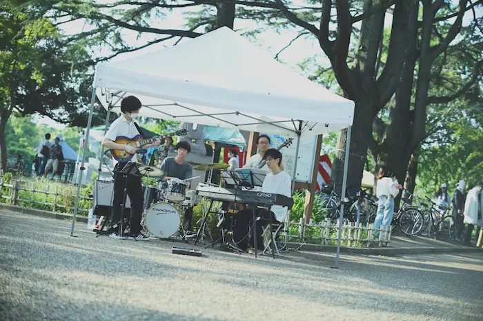
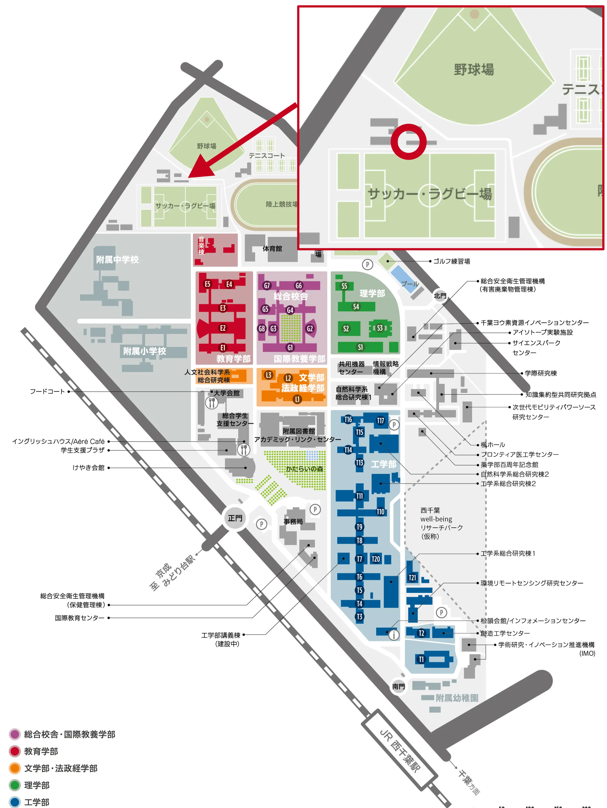
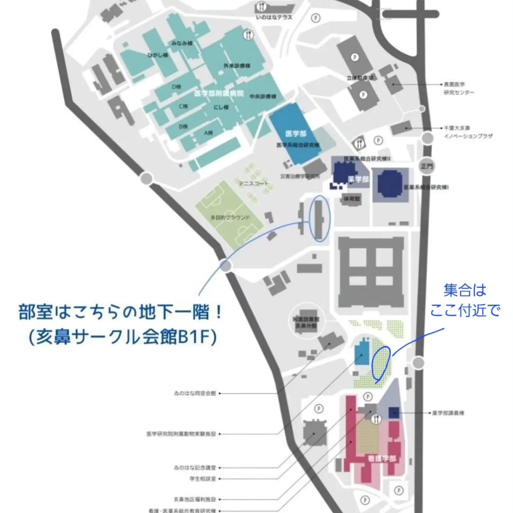

千葉大学モダンジャズ研究会は、西千葉キャンパスおよび亥鼻キャンパスで活動している公認サークルです。主に1940年代以降のジャズを、コンボ形式のバンドで演奏しています。
最新のイベントスケジュールや活動報告は、下記のSNSを参照してください。
千葉大学モダンジャズ研究会は、西千葉キャンパスおよび亥鼻キャンパスで活動している公認サークルです。主に1940年代以降のジャズを、コンボ形式のバンドで演奏しています。
最新のイベントスケジュールや活動報告は、下記のSNSを参照してください。

決まった練習日は特になく、基本的に個人で練習をします。なんとなく集まった人でセッションをすることも多いです。
部員は随時募集しています。千葉大生に限らず、他大学生や社会人の方も歓迎しております。
また見学やジャム・セッション参加も自由です。お気軽に部室までお越しください。
西千葉・亥鼻各キャンパスの部室で活動しています。

キャンパスの北端、サッカー・ラグビー場隣のサークル棟に部室があります。

キャンパス中央、サークル会館B1Fに部室があります。
パーティー、イベント等の演奏依頼も随時受け付けております。メールまたはSNSでお気軽にお問い合わせください。